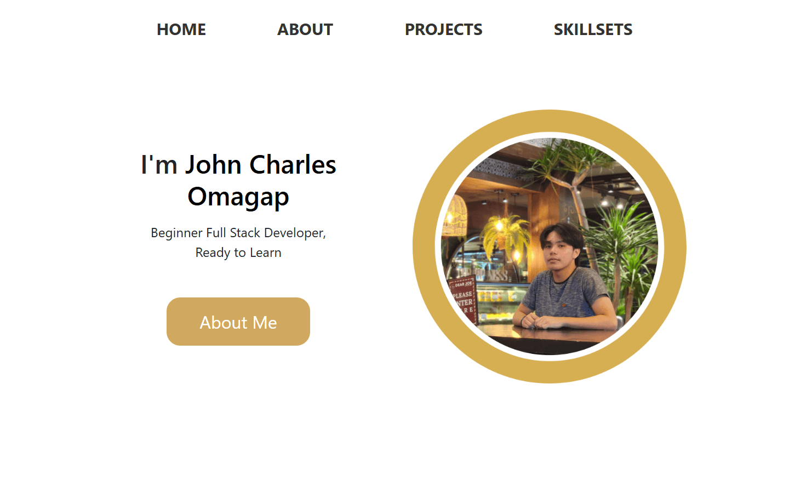
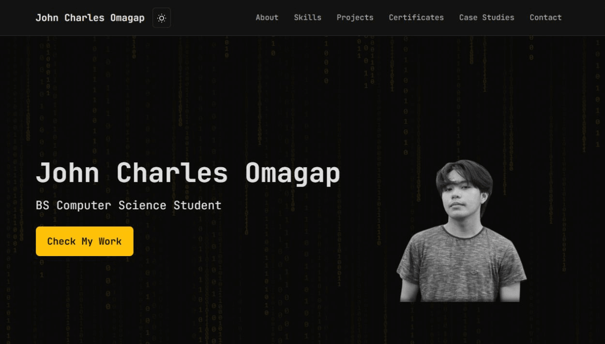
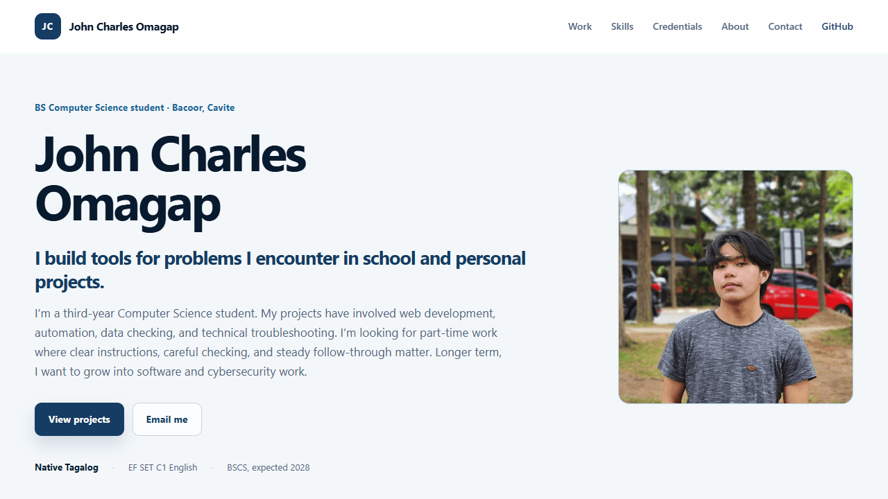

Design history
How the portfolio
changed over time.
A concise record of the portfolio’s known design stages and repository milestones.
This page records direction and provenance; it does not claim screenshots or features that are not available here.
01 / Timeline
- 2024
portfolio-v1.0.0-pages
v1 React
The first recorded portfolio direction used a bright React layout, circular portrait treatment, and direct section navigation.

Actual capture rendered from the preserved v1 Pages history without browser chrome. - 2026
portfolio-v2.1.0-terminal
Terminal v2
The next major direction used matrix rain, terminal typography, a monochrome portrait cutout, and a yellow action accent.

Actual capture rendered from the terminal milestone represented by 3da99cc, with the browser scrollbar cropped out. - 2026
portfolio-v2.2.0-editorial-deployed
Deployed editorial v2
The deployed redesign replaced the terminal interface with a conventional professional hierarchy, evidence-led project descriptions, and a lighter visual system.

Actual capture rendered from deployed milestone 4f22f90 without browser chrome. - Current
portfolio-v2.3.0-rc.1
Editorial field notes revision
The current revision is an active local release candidate. It will receive a historical screenshot only after review and deployment.